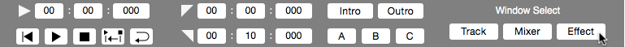
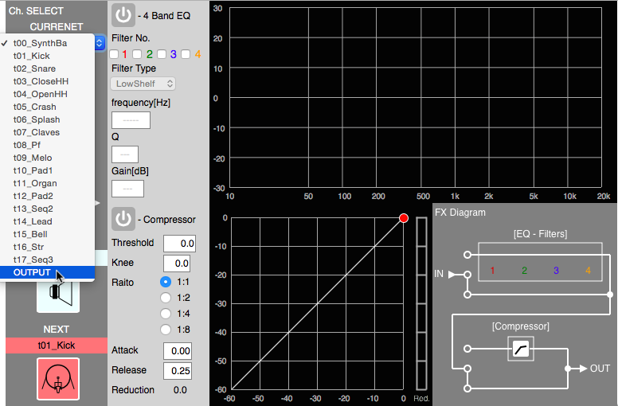
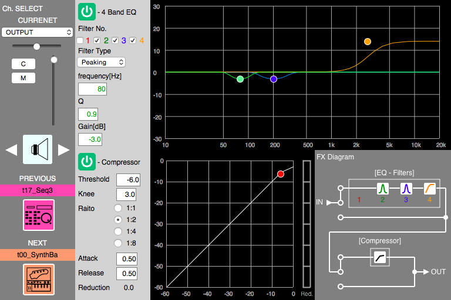
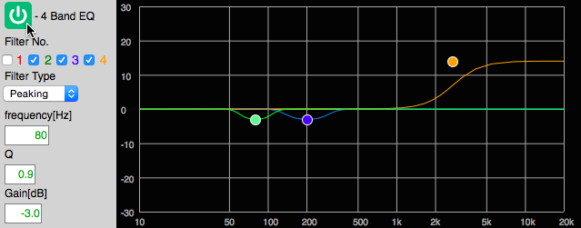
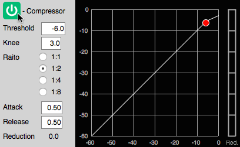
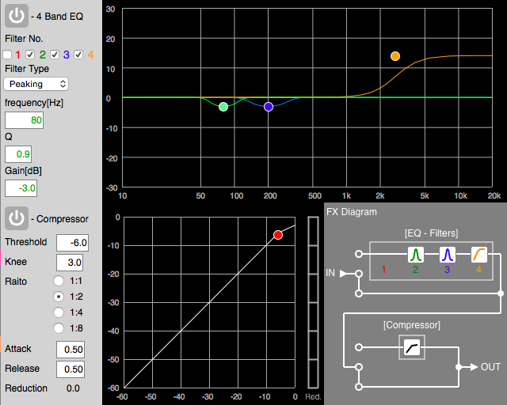
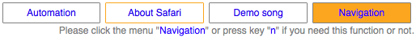

This application using Safari in Mac OS X sounds high-frequency reduced under my condition. Then, this application sets the parameters of EQ and compressor for "OUTPUT" channel automatically in the case of detecting Safari. If this application may sound high-frequency noisy under your condition, please disable EQ and compressor or modify the parameter of EQ and compressor for "OUTPUT" channel manually.
1. Click the button "Effect" in Transpose as shown in figure below.
2. Select "CURRENT" channel to "OUTPUT" as shown in figure below.
3. See the green buttons which look like "power button" as shown in figure below. The color means EQ or compressor for a channel are enable respectively.
4. Click the button to disalbe EQ as shown in figure below.
5. Simirally, click the button to disable compressor as shown in figure below.
6. Finally, see each button colored gray as shown in figure below. The color means EQ and compressor are disable respectively.
This application changes the parameters of EQ and compressor with mouse operations:"click" and "drag & drop." Also, it has a navigation function which displays the message at a mouse position to use this application. If you want to use the function, please click "Navigation" from menu as shown in figure below or press key "n."
This application supports "click" operations for EQ and compressor as shown in table below. According to the table, clicking each parameter displays the corresponding content in "Key/Mouse" page.
| Parameter | Type | Effect |
|---|---|---|
| Filter No.1, 2, 3, and 4 | Check box | EQ |
| Filter Type | Select | |
| Ratio | Radio button | compressor |
This application supports "drag & drop" operations for EQ and compressor as shown in table below. According to the table, clicking each parameter displays the corresponding content in "Key/Mouse" page.
| Parameter | Type / location | Effect |
|---|---|---|
| frequency[Hz] | Input box | EQ |
| Q | Input box | |
| Gain | Input box | |
| Markers | Spectrum | |
| Threshold | Input box | compressor |
| Knee | Input box | |
| Attack | Input box | |
| Release | Input box | |
| Marker | Graph |